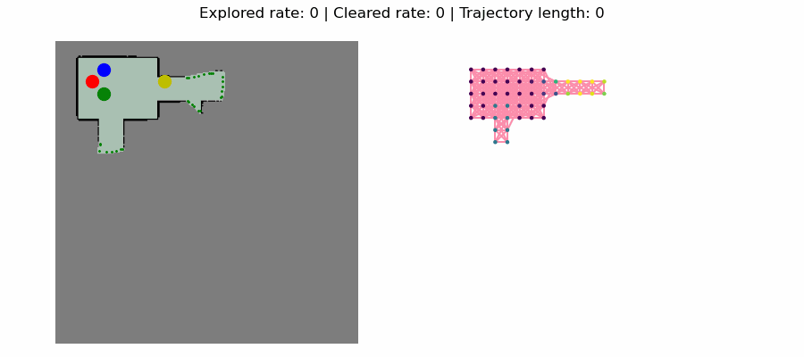
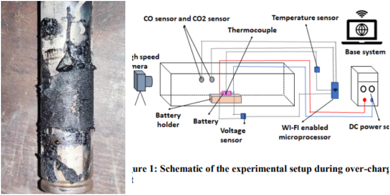

Subhadeep Koley
I'm a Computer Science PhD student at Lehigh University, advised by Prof. David Saldaña in the Swarms Lab.
I am interested in how aerial robots can share information to navigate turbulent airflow, and in model-based reinforcement learning for complex physical interactions. Before Lehigh, I built decentralized drone-swarm software deployed on a five-drone swarm at IIT Kanpur.
I'm looking for research internships for Summer 2027 in aerial robotics, multi-robot systems, and robot learning.
Selected publications
Full list on Google Scholar.

images/viper.gifYizhuo Wang, Yuhong Cao, Jimmy Chiun, Subhadeep Koley, Mandy Pham, Guillaume Adrien Sartoretti
Conference on Robot Learning (CoRL), 2024
paper / project page / code
A learned policy lets a team of robots coordinate to find and track evaders in unknown environments.

images/thermal_runaway.pngAjit Das, Saumendra Nath Mishra, Subhadeep Koley, Sourav Sarkar, Achintya Mukhopadhyay, Swarnendu Sen
IEEE Conference on Sustainable Energy and Future Electric Transportation (SEFET), 2023
Best Paper Award
News
| Sep 2026 | Started exploring collaborative aerial navigation in turbulent flows. |
| Nov 2024 | ViPER presented at CoRL 2024 in Munich. |
| Aug 2024 | Started my PhD at Lehigh University with Prof. David Saldaña. |
| Aug 2023 | Won the Best Paper Award at IEEE SEFET for work on early detection of battery thermal runaway. |